hello programers
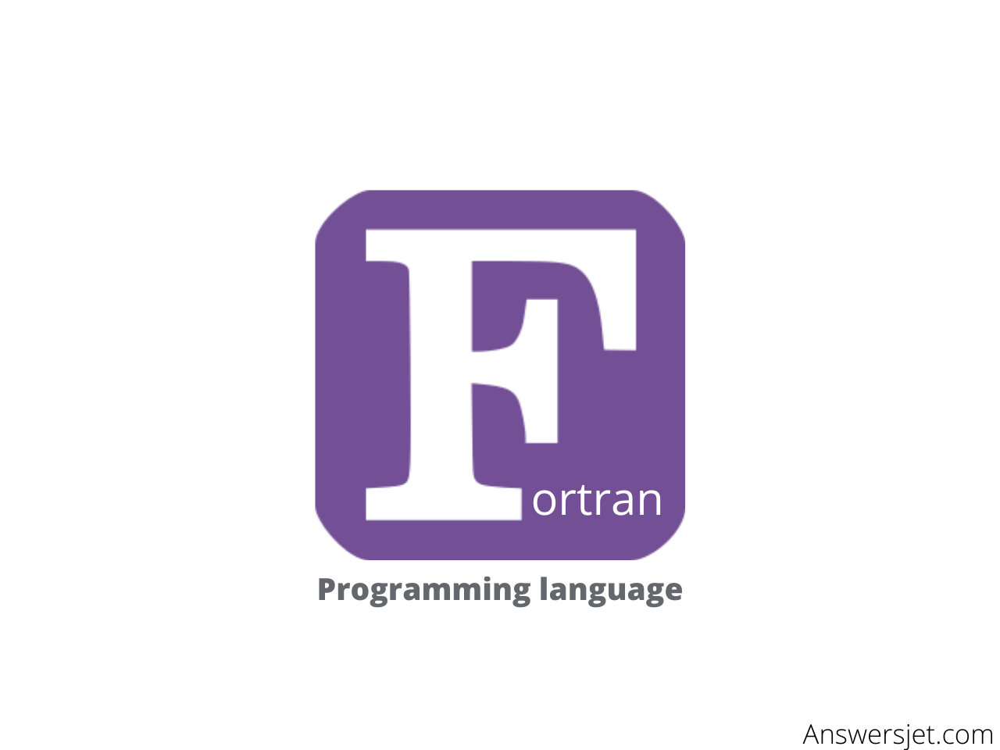
FORTRAN
FORTRAN (short for "Formula Translation") is one of the oldest high-level programming languages, developed by IBM in the late 1950s for scientific and engineering calculations. It introduced features such as array processing, subroutines, and loops, making it easier for programmers to write efficient numerical code. Over the years, several versions have been released, with Fortran 2018 being the latest standard. Despite its age, FORTRAN remains widely used in scientific and engineering communities, particularly in legacy systems and applications requiring high performance and numerical accuracy. While its syntax may seem outdated by modern standards, its efficiency in handling complex mathematical computations ensures its continued relevance in specialized domains such as physics, engineering, and weather forecasting.

RUBY
Ruby is a dynamic, reflective, object-oriented programming language known for its simplicity and productivity. Created in the mid-1990s by Yukihiro Matsumoto ("Matz"), Ruby has gained popularity due to its elegant syntax and focus on developer happiness. It features automatic memory management, dynamic typing, and a strong emphasis on object-oriented programming principles. Ruby's syntax is designed to be intuitive and readable, making it accessible to beginners while offering powerful features for experienced developers. It has a rich ecosystem of libraries and frameworks, including Ruby on Rails, a popular web application framework that has contributed to Ruby's widespread use in web development. Ruby is also used for scripting, automation, and a variety of other software development tasks. Its community-driven development and vibrant ecosystem continue to make Ruby a favored language for many developers.
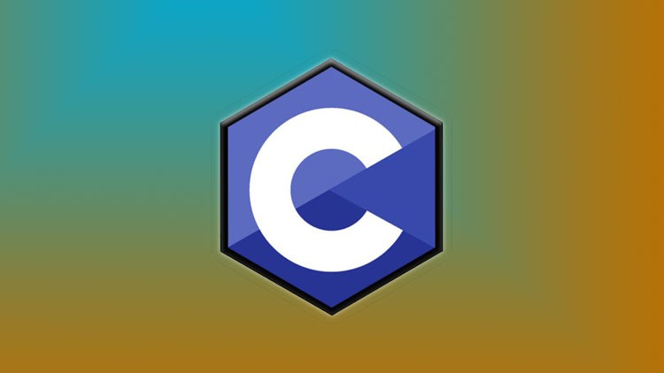
C LANGUAGE
C is a foundational, general-purpose programming language developed by Dennis Ritchie in the early 1970s at Bell Labs. Renowned for its efficiency and portability, C is a procedural and structured language with static typing, offering programmers powerful features like pointers and a rich standard library. Its ability to directly access hardware resources and manage memory efficiently makes it ideal for systems programming, embedded systems, and performance-critical applications. C's preprocessor directives enhance modularity, while its low-level features enable fine-grained control over memory allocation and hardware interaction. Despite the emergence of newer languages, C remains essential, boasting a vast ecosystem and active community, cementing its status as a cornerstone language in the field of programming.
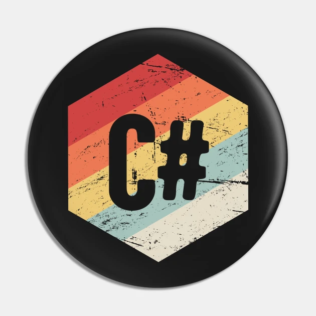
C# LANGUAGE
C# (pronounced "C sharp") is a modern, object-oriented programming language developed by Microsoft as part of its .NET framework. Introduced in the early 2000s, C# combines the power and flexibility of C++ with the simplicity and ease of use of Visual Basic. It is designed for building robust and scalable applications for the Microsoft ecosystem, including Windows desktop applications, web applications, mobile apps (using Xamarin), and games (with Unity). Key features of C# include strong typing, automatic memory management through garbage collection, support for modern programming paradigms like asynchronous programming with async/await, LINQ (Language Integrated Query) for querying data sources, and extensive standard libraries for tasks such as file I/O, networking, and database access. C# is widely used in enterprise software development and is known for its productivity, safety features, and integration with Microsoft development tools like Visual Studio. Additionally, C# enjoys a large and active community, with a wealth of resources and third-party libraries available for developers.
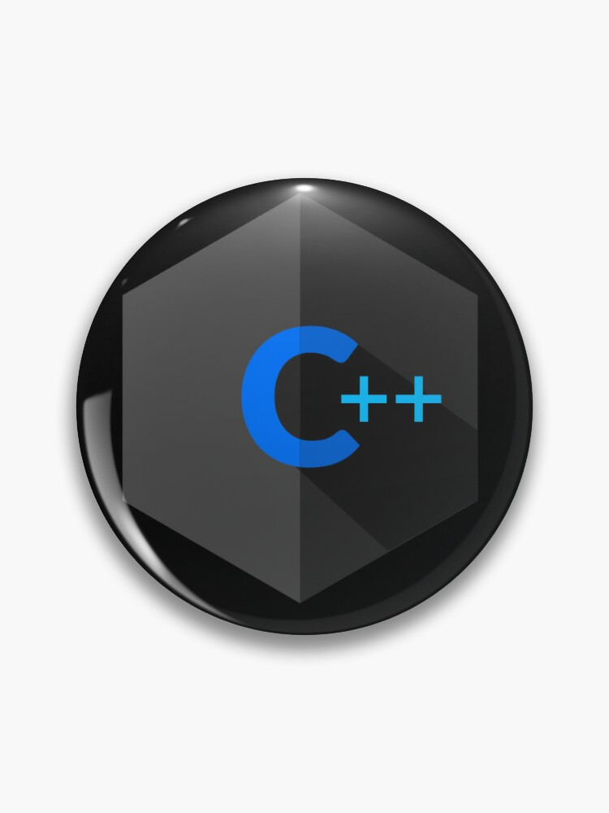
Cpp LANGUAGE
C++ is a powerful, high-level programming language that builds upon the foundation of C with additional features for object-oriented programming (OOP), generic programming, and modern software development. Developed in the early 1980s by Bjarne Stroustrup, C++ is widely used in a variety of application domains, including system/application software, game development, embedded systems, and scientific computing. One of the key features of C++ is its support for classes and objects, allowing developers to organize code into reusable modules and create complex software systems. C++ also introduces concepts such as inheritance, polymorphism, and encapsulation, which facilitate code reuse, maintainability, and extensibility. Furthermore, C++ supports generic programming through templates, enabling developers to write efficient, type-safe code that operates on different data types. With its performance and versatility, C++ remains a popular choice for developers seeking control over system resources and optimal performance, while also providing the flexibility to build large-scale, maintainable software projects.

JAVA
Java is a versatile, object-oriented programming language developed by Sun Microsystems (now owned by Oracle Corporation) in the mid-1990s. Known for its simplicity, portability, and robustness, Java has become one of the most widely used programming languages in the world. Java's "write once, run anywhere" principle allows developers to write code once and run it on any platform that supports Java without recompilation, thanks to the Java Virtual Machine (JVM). Key features of Java include its platform independence, automatic memory management through garbage collection, strong type safety, and extensive standard library. Java is commonly used for developing web applications, enterprise software, mobile apps (using Android), desktop applications, and large-scale systems. It supports multithreading and concurrency, making it suitable for building scalable and high-performance applications. Additionally, Java has a vibrant ecosystem with a vast array of libraries, frameworks, and tools, as well as a strong community of developers contributing to its growth and evolution.
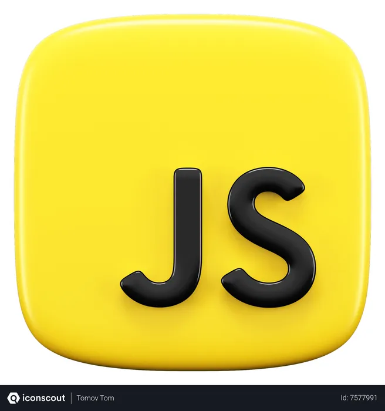
JAVA SCRIPT
JavaScript is a versatile, high-level programming language primarily used for client-side web development. Developed in the mid-1990s by Brendan Eich at Netscape, JavaScript has since become one of the most popular and widely-used programming languages. Originally intended to make web pages more dynamic and interactive, JavaScript has evolved into a multi-paradigm language that supports both object-oriented and functional programming styles.Key features of JavaScript include its ability to manipulate HTML and CSS to create dynamic web content, handle user interactions through event-driven programming, and perform asynchronous operations using callbacks or promises. JavaScript is often used in conjunction with HTML and CSS to create interactive web applications, ranging from simple scripts to complex, feature-rich web applications.In addition to client-side development, JavaScript is also used on the server-side through platforms like Node.js, enabling developers to build full-stack applications using a single language. With its ubiquity on the web and its expanding role in server-side development, JavaScript has become an essential skill for web developers worldwide.
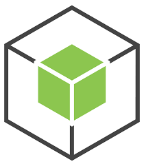
NODE JS
Node.js is an open-source, cross-platform JavaScript runtime environment that allows developers to run JavaScript code outside of a web browser. Built on Chrome's V8 JavaScript engine, Node.js enables server-side and networking applications to be developed with JavaScript, offering a non-blocking, event-driven architecture that is well-suited for building scalable and high-performance applications.Key features of Node.js include its asynchronous and event-driven nature, which allows for efficient handling of I/O operations without blocking the execution of other tasks. This makes Node.js particularly suitable for building real-time web applications, APIs, and microservices that require high concurrency and low latency.Node.js comes with a rich ecosystem of libraries and frameworks, such as Express.js, Hapi.js, and Socket.IO, which streamline the development of web applications and APIs. Additionally, Node.js has a vibrant community and extensive documentation, making it easy for developers to get started and find solutions to common problems.With its versatility, performance, and large ecosystem, Node.js has become a popular choice for building modern web applications and has been adopted by companies of all sizes for a wide range of use cases.

NEXT JS
Next.js is a popular open-source React framework developed by Vercel, designed for building server-side rendered (SSR) and statically generated (SSG) web applications. It offers a robust set of features aimed at streamlining development processes and enhancing performance. Key functionalities include server-side rendering (SSR) for improved performance and SEO, static site generation (SSG) for faster loading times, and automatic code splitting to optimize initial page loads. Next.js also simplifies API creation with built-in support for API routes and facilitates navigation and organization through its file-based routing system. Additionally, it provides CSS support, image optimization, and TypeScript integration for enhanced development experiences. Overall, Next.js is highly valued by developers and organizations seeking to build fast, scalable, and SEO-friendly web applications, thanks to its comprehensive feature set and ongoing development efforts.
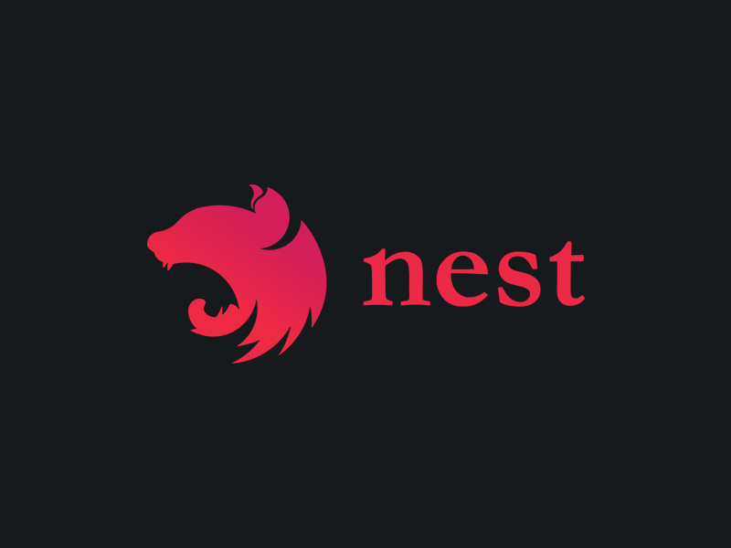
NEST JS
Nest.js is a progressive Node.js framework designed for building efficient, reliable, and scalable server-side applications. It leverages TypeScript's benefits, bringing modern design patterns and features to Node.js development. With its modular architecture and dependency injection system, Nest.js promotes code reusability, maintainability, and testability. It encourages building applications in a modular way, allowing developers to organize code into reusable modules with clear boundaries and separation of concerns. Nest.js provides a built-in dependency injection system that facilitates the management of dependencies and promotes the writing of decoupled, testable code. Being built with TypeScript, Nest.js enables developers to write type-safe code and leverage features such as interfaces, decorators, and generics for enhanced development experiences. Utilizing decorators and metadata, Nest.js defines routes, middleware, and other application features in a declarative and intuitive manner, reducing boilerplate code and improving readability. It also supports middleware for handling cross-cutting concerns and integrates with various databases and ORMs for seamless database operations. With features for WebSockets, microservices, and a growing community, Nest.js is well-suited for building complex, scalable applications and APIs, offering a solid foundation and extensive documentation for developers.
REACT
React is an open-source JavaScript library developed by Facebook for building user interfaces (UIs) and single-page applications. Launched in 2013, React has gained widespread adoption and is one of the most popular front-end development libraries today. React uses a component-based architecture, where UIs are composed of reusable components that manage their own state and can be composed together to build complex user interfaces. With features like virtual DOM for efficient updates, JSX for writing HTML-like code within JavaScript, and hooks for stateful logic, React offers developers a powerful and declarative way to build interactive and maintainable UIs. Supported by a large community and ecosystem of libraries and tools, React remains a top choice for building modern web applications and mobile apps using frameworks like React Native.

MY SQL
MySQL is an open-source relational database management system renowned for its reliability, performance, and ease of use. Developed by MySQL AB and later acquired by Oracle Corporation, it is favored for managing and querying structured data, commonly utilized in web development and various applications requiring structured data storage. MySQL adheres to the relational model, storing data in tables with rows and columns, and supports SQL for data manipulation. Operating across multiple platforms including Windows, Linux, and macOS, MySQL is highly scalable, capable of handling large data volumes and high-traffic websites with appropriate configuration and optimization. Its performance optimizations such as indexing and caching, along with efficient storage engines like InnoDB and MyISAM, contribute to its efficiency. MySQL also prioritizes security with features like authentication, access control, encryption, and auditing. Additionally, it offers high availability through replication, clustering, and backup solutions. Supported by a vibrant community, MySQL ensures compatibility with various programming languages, frameworks, and platforms, making it a popular choice for a wide range of applications.
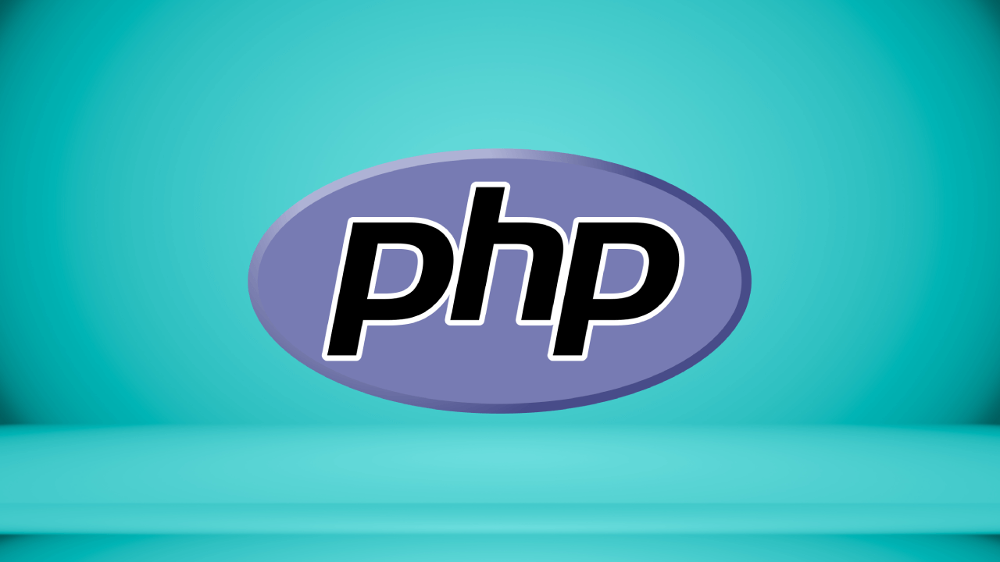
PHP
PHP (Hypertext Preprocessor) is a widely-used open-source server-side scripting language primarily used for web development. Originally created by Rasmus Lerdorf in 1994, PHP has evolved into a powerful and versatile language for building dynamic websites and web applications. It is executed on the server, generating dynamic content that is then sent to the client's browser, enabling the creation of interactive and data-driven web pages. PHP seamlessly integrates with HTML, allowing developers to mix dynamic content generation with static HTML markup. With compatibility across various web servers and operating systems, PHP is highly versatile and widely adopted. It comes with an extensive set of built-in functions for tasks such as file handling, database access, and session management, and supports a wide range of extensions and libraries for additional functionality. PHP also boasts a large and active community of developers, contributing to its extensive documentation, frameworks, and resources available for developers. With continuous improvements in performance, security features, and flexibility, PHP remains a popular choice for web development, powering a significant portion of the web from small personal websites to large-scale enterprise applications.
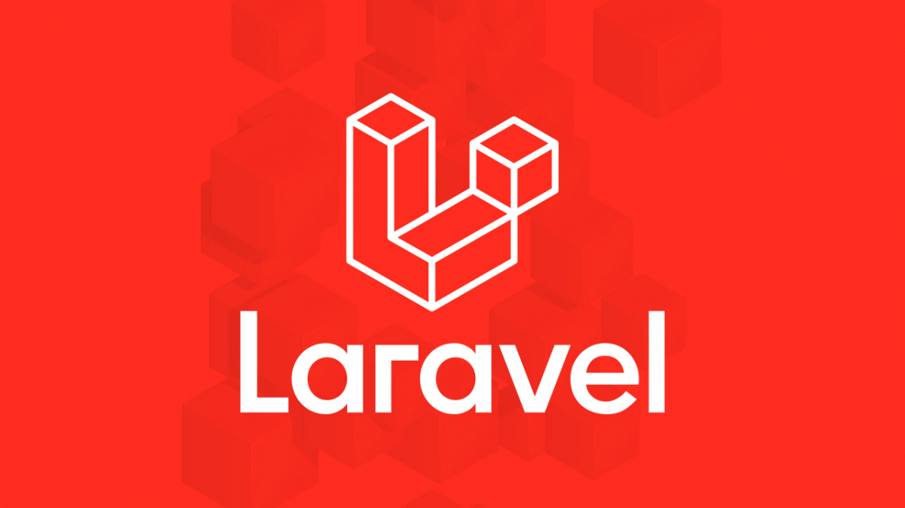
LARAVEL
Laravel is a powerful PHP framework renowned for its simplicity, expressiveness, and developer-friendly features. Introduced in 2011 by Taylor Otwell, it has swiftly become a favorite among developers for its rich set of tools and libraries that streamline common tasks and encourage best practices. Key features of Laravel include the intuitive Eloquent ORM for database interactions, the Blade templating engine for creating dynamic and reusable templates, and a robust routing system for defining clean and SEO-friendly URLs. Additionally, Laravel offers middleware for handling HTTP requests, built-in authentication and authorization features, and an Artisan command-line interface (CLI) for automating common development tasks. With support for testing, a vibrant community, and a vast ecosystem of packages and resources, Laravel empowers developers to build scalable, maintainable, and feature-rich web applications efficiently.
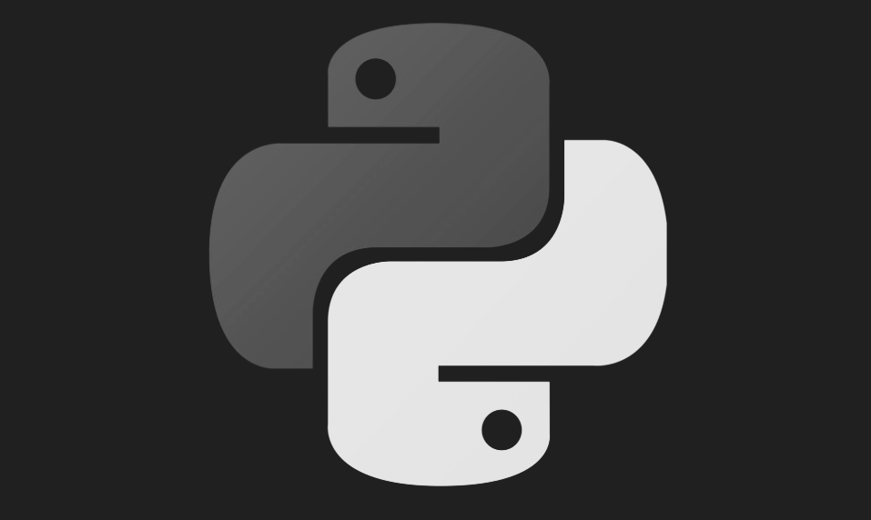
PYTHON
Python is a versatile, high-level programming language recognized for its simplicity, readability, and extensive standard library. Created by Guido van Rossum in 1991, Python has grown into one of the most popular programming languages worldwide, finding applications in web development, data analysis, artificial intelligence, scientific computing, and more. Its clean syntax promotes readability and reduces maintenance costs, using indentation to define code blocks. Python's extensive standard library provides modules and functions for various tasks, simplifying development and reducing dependencies. Being interpreted and interactive, Python enables efficient development and debugging. With dynamic typing and support for multiple programming paradigms, including procedural, object-oriented, and functional programming, Python offers flexibility to developers. Supported by a large and active community, Python boasts a vast ecosystem of open-source packages and libraries hosted on PyPI. Its platform independence and scalability make it suitable for projects of all sizes, from small scripts to large-scale applications, driving innovation across industries.
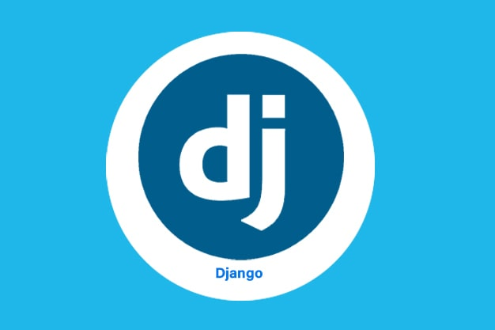
PYTHON
Django is a high-level web framework written in Python, known for its rapid development capabilities and pragmatic design philosophy. Initially developed in 2003 by Adrian Holovaty and Simon Willison, Django simplifies web application development by providing a comprehensive set of tools and patterns for common tasks. Its Model-View-Controller (MVC) architecture promotes clean code organization, while the built-in Object-Relational Mapping (ORM) abstracts away database management complexities. Django's features include a powerful admin interface, URL routing system, and template engine for creating dynamic user interfaces. Security is a priority, with built-in protections against common web vulnerabilities, and middleware support enables custom logic integration. Additionally, Django supports internationalization, scalability, and performance optimization, making it an ideal choice for building robust and secure web applications efficiently.
SWIFT
Swift is a powerful and intuitive programming language developed by Apple for building iOS, macOS, watchOS, and tvOS applications. Introduced in 2014, Swift is designed to be fast, modern, and safe, with a concise and expressive syntax that makes writing clean and maintainable code easier for developers. Key features include safety mechanisms like optionals to prevent common errors, high-performance optimizations for efficient execution, and interoperability with Objective-C, enabling the use of existing libraries and frameworks. Modern language features such as closures, generics, and pattern matching further enhance Swift's versatility and expressiveness. With interactive Swift Playgrounds for experimentation and learning, and its open-source nature fostering a growing ecosystem beyond Apple's platforms, Swift has become a preferred language for developing robust and efficient applications across the Apple ecosystem.
GO
Go, also known as Golang, is an open-source programming language developed by Google engineers to address modern software development challenges. Introduced in 2009, Go prioritizes simplicity, offering a clean and straightforward syntax that appeals to both novice and experienced programmers. Its built-in support for concurrency, facilitated by goroutines and channels, simplifies the creation of concurrent processes without the complexities of traditional threading. Go's efficiency is underscored by its statically typed nature, compiler optimization, and automatic memory management, ensuring fast execution and performance. With a rich standard library covering networking, file I/O, and cryptography, Go fosters productivity by reducing reliance on external dependencies. Its cross-platform compatibility enables seamless deployment across diverse operating systems, while robust tooling for formatting, testing, and profiling enhances developer efficiency. Go's vibrant community and continued support from Google reinforce its position as a powerful and accessible language for building scalable, efficient software solutions.